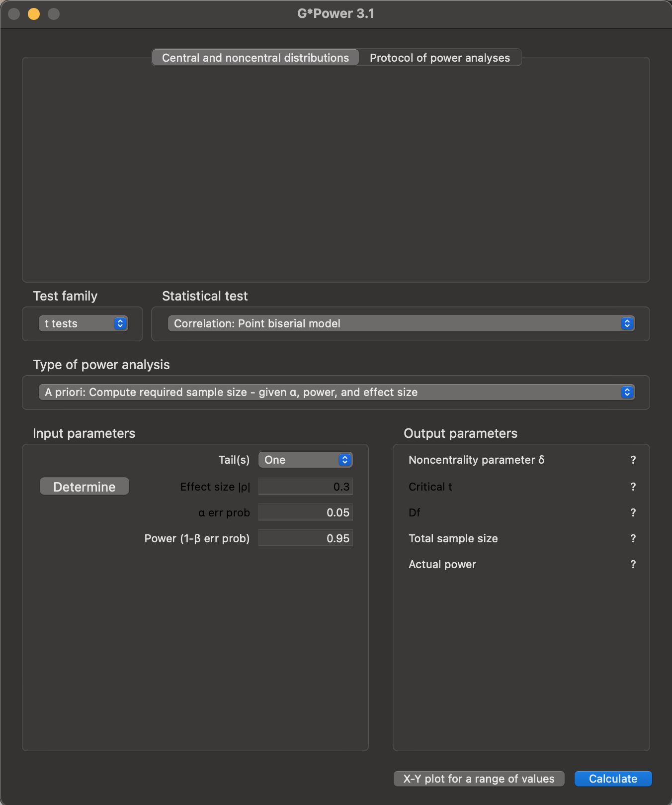

G*Power Walkthrough
G*Power
G*Poweris a powerful software tool that can compute several types of power calculations for a very wide range of statistical analyses (@Faul2007-le)
It is beyond the workshop scope to consider all the possible uses of G*Power.
We will only be introducing you to basic operation of the program.
G*Power is a free, open-source software tool for carrying oout power calculations for a number of different kinds of statistical analyses.
Other tools are available, and the
Rsoftware is a good place to start exploring, if you’re interested.In this workshop we only have time to introduce you to some of the basic uses of the program - but they are the ones you’re likely to use most often.
The Experiment 1
Is the average weight of a group of mice statistically different from 25g?
- Means of real value measurements like height, weight, tend to follow a normal distribution. A \(t\)-test may be appropriate
- We are testing the mean of a sample against a single hypothesised (null) value, so a one-sample \(t\)-test would be the appropriate variant
- We want to know if the sample mean is different from the single hypothesised (null) value and are not concerned with direction, so we would use a two-tailed test
We’re going to work with a hypotheticaal experiment: you have a group of mice, and you want to test whether their average weight is 25g.
A better way of phrasing this is to ask whether the average weight of the mice is statistically different from 25g.
We need to reason out what kind of statistical test we need.
Your null hypothesis is that the average weight is 25g (your alternative hypothesis is that the average weight is something else)
As weight is a continuous real value, we expect it to be described by a normal distribution, which suggests that a t-test is a good choice for a statistical approach.
We have set the null hypothesis to be a single point value for average weight: 25g. So a one-sample t-test would be the appropriate kind of t-test.
We want to know if the mean weight of the mice is different from 25g, and we don’t mind in which direction this difference lies, so we use a two-tailed t-test
The Experiment 2
Is the average weight of a group of mice statistically different from 25g?
We want to determine an appropriate sample size for our experiment, given an expected effect size, variance, and choices of power and statistical significance threshold
So we know what kind of test we want to perform, but what do we want from the power calculation?
As usual, we want to know what sample size we need (i.e. how many individual mice we would have to weigh) to detect a particular effect size (i.e. a certain amount of difference from 25g), with particular choices of power and statistical significance (false positive rate).
The Experiment 3
Is the average weight of a group of mice statistically different from 25g?
We want to calculate an appropriate sample size for our experiment before we perform it, so we require an a priori power calculation
- We’re calculating this sample size before we perform the experiment, so it is an a priori power calculation.
The Experiment 4
Is the average weight of a group of mice statistically different from 25g?
We will use standard funders’ requirements of 80% power at \(P < 0.05\)
\[\alpha=0.05, \beta=0.2, 1-\beta=0.8 \]
- Our funders require us to calculate for 80% power at P < 0.05, so we choose those values
The Experiment 5
Is the average weight of a group of mice statistically different from 25g?
There are no absolute values that constitute a meaningful difference in weight under all circumstances, but we will make the following assumptions
- A 10% difference in weight from the expected 25g null would be meaningful, for an effect size of 2.5g
- We assume that the weight of individuals in the sample has a standard deviation of 1.25g, so \(\sigma = 1.25\), on the basis of having previously weighed groups of mice.
- Now we have to use our scientific judgement and experience.
- How large a difference in average weight constitutes a meaningful difference?
- There is no absolutely correct answer, so we’ll choose something that seems plausible: a 10% difference in weight.
- We’ll assume that a meaningful difference in weight - a meaningful effect size - is 2.5g
- But what about the variance in weight?
- Again, there’s no absolutely correct answer, but based on our experience in weighing mice, we have typically seen a standard deviation in measured weight of about 1.25g, so we’ll use that.
Let’s start!
We now have enough information to calculate an appropriate sample size
- two-tailed, one sample \(t\)-test
- a priori power calculation to compute required sample size
- \(\alpha = 0.05\)
- Power \(1 - \beta = 0.8\)
- Effect size = 2.5
- Standard deviation, \(\sigma = 1.25\)
- Cohen’s \(d = \frac{\mu - \mu_0}{\sigma}\)

G*Power start screen
- We now have enough information to calculate an appropriate sample size using G*Power
- Open G*Power
- Ensure “Central and noncentral distributions” is selected
- We want a two-tailed, one sample t-test, so choose:
- Test family: t-test
- Statistical test: Means: Difference from constant (one sample case)
- Input parameters: Tails: Two
- We want an a priori power calculation to obtain sample size
- Type of power analysis: A priori: Compute required sample size
- Set parameters:
- alpha = 0.05
- power = 0.8
- we need to set something called Cohen’s d, to represent the effect size
- effect size = 2.5
- standard deviation = 1.25
- Cohen’s d = 2.5/1.25 = 2
- Click
Calculate- This tells us we need a sample size of five individuals
- It also tells us that our actual statistical power is 0.9